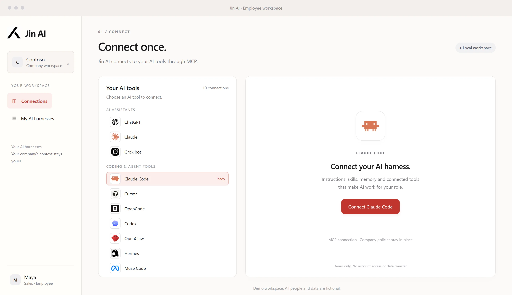
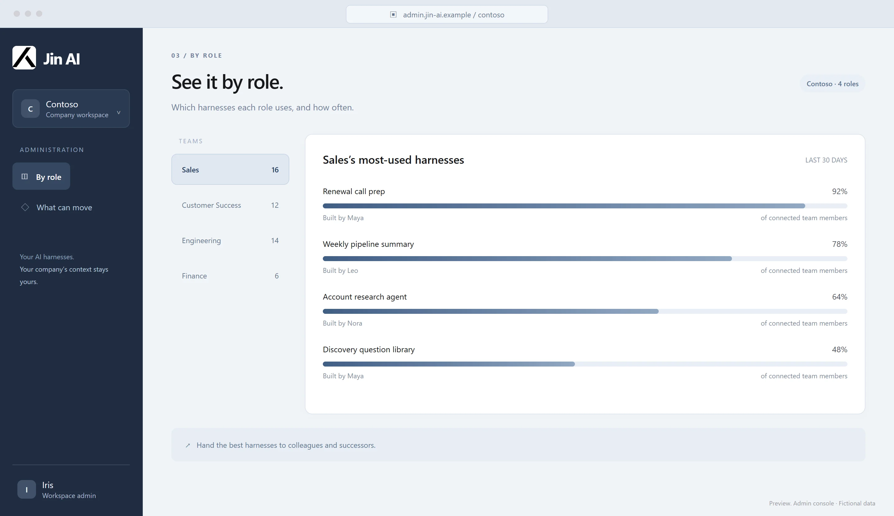
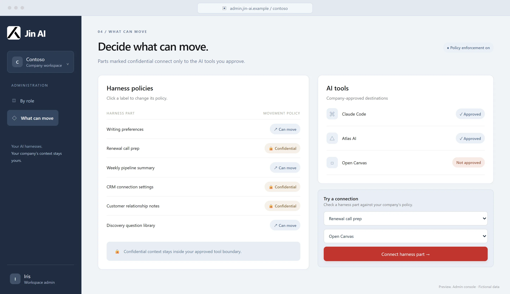

仕組み
AI ハーネスとは、AI エージェントを役割に合わせて働かせるための、指示・スキル・記憶・接続ツールの一式です。
社員


一度つなぐだけ。
Jin AI は MCP を通じて、お使いの AI ツールにつながります。
すべてのハーネスを種類ごとに。
スキル、指示、記憶、MCP の設定を、人ごとに整理して表示します。
例:
CLAUDE.md、スキル、記憶のファイル、MCP の設定。
管理者


役割ごとに見る。
どの役割が、どのハーネスを、どれくらい使っているか。
持ち出せるものを決める。
機密とした部品は、承認した AI ツールにだけつながります。
パイロットでは、今は会社が手作業で承認します。